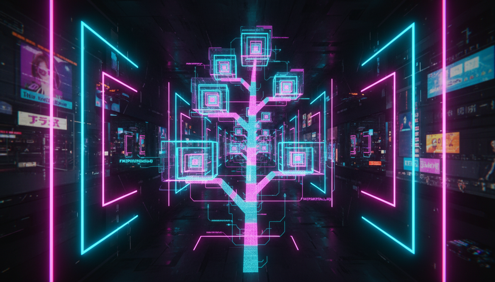

Принцип рекурсії, базовий випадок, хвостова рекурсія

Рекурсія — це техніка, коли функція викликає сама себе. Кожен рекурсивний виклик працює з меншою підзадачею, доки не досягне базового випадку.
// Структура рекурсивної функції:
// тип функція(параметри) {
// if (базовий випадок) {
// return результат;
// }
// return функція(менша підзадача);
// }
// Обчислення факторіалу
#include <iostream>
long long factorial(int n) {
// Базовий випадок
if (n <= 1) {
return 1;
}
// Рекурсивний крок
return n * factorial(n - 1);
}
int main() {
std::cout << "5! = " << factorial(5) << std::endl; // 120
std::cout << "10! = " << factorial(10) << std::endl; // 3628800
return 0;
}#include <iostream>
long long fibonacci(int n) {
if (n <= 1) {
return n; // F(0) = 0, F(1) = 1
}
return fibonacci(n - 1) + fibonacci(n - 2);
}
int main() {
for (int i = 0; i <= 15; i++) {
std::cout << "F(" << i << ") = " << fibonacci(i) << std::endl;
}
return 0;
}